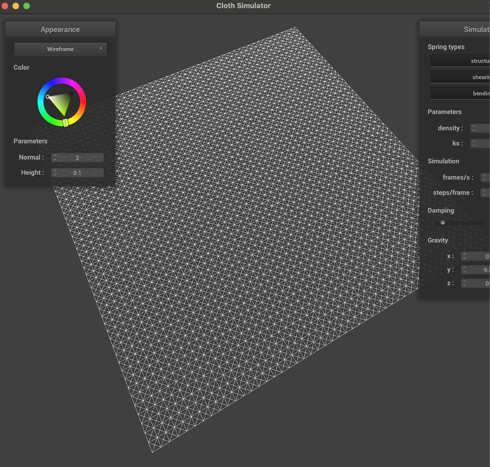

Homework 4
Part 1
* Take some screenshots of scene/pinned2.json from a viewing angle where you can clearly see the cloth wireframe to show the structure of your point masses and springs.
* Show us what the wireframe looks like (1) without any shearing constraints, (2) with only shearing constraints, and (3) with all constraints.
Here is the scene where we can clearly see the structure of the point masses and springs.
 
Here is another view highlighting the structure of the point masses and springs:

Wireframe with no shearing constraints:

Wireframe with only shearing constraints:

Wireframe looks like with all constraints:

Part 2
* Experiment with some the parameters in the simulation. To do so, pause the simulation at the start with P, modify the values of interest, and then resume by pressing P again. You can also restart the simulation at any time from the cloth's starting position by pressing R.
* Describe the effects of changing the spring constant ks; how does the cloth behave from start to rest with a very low ks? A high ks?
* What about for density?
* What about for damping?
* For each of the above, observe any noticeable differences in the cloth compared to the default parameters and show us some screenshots of those interesting differences and describe when they occur.
Show us a screenshot of your shaded cloth from scene/pinned4.json in its final resting state! If you choose to use different parameters than the default ones, please list them.
Testing parameters to see how it affects the cloth:
1. Changing the spring constant ks:
1. As the spring constant decreases, the reaction of the cloth to what it is experiencing decreases. What this means is that as the cloth falls, the way the cloth moves as it falls slows down.
2. Density:
1. As Density increases, the cloth becomes more stiff, and this results in the cloth falling without moving or curving in ways you would expect when a cloth hits the air.
3. Damping:
1. As Damping increases, the cloth moves slower. The way the cloth moves as it falls does not change, however.
With regard to damping, as the damping value increases the ks value (from 0.2000 to 1), the rate at which the cloth falls decreases. The reason for this is dampening resists fast changes to motion and this essentially means that as the damping value increases, the motion of the cloth will slow down.
This may be hard to see with just screenshots, but I took screenshots of the falling of the cloth at the same time from the start of the cloth, and we can see the differences of how long it takes for them to fall. I took screenshots of both of the pieces of cloth 3 seconds after starting, so we can see the difference in how far they fall for different damping values.
Damping of 1:

Damping of 0.2:

Changing ks value:
This is the cloth with ks increased. The new ks value is 50000. This makes sense to increase how taut the cloth is, which is what we can see relative to the previous cloth. Essentially, as the ks value increases, how taut the cloth is increases.

The Cloth Landing Still with Normal Parameters:

Part 3
* Show us screenshots of your shaded cloth from scene/sphere.json in its final resting state on the sphere using the default ks = 5000 as well as with ks = 500 and ks = 50000. Describe the differences in the results.
* Show us a screenshot of your shaded cloth lying peacefully at rest on the plane. If you haven't by now, feel free to express your colorful creativity with the cloth! (You will need to complete the shaders portion first to show custom colors.)
Pictures of shaded cloth on final resting state on the sphere at different parameters.
Pictures of shaded cloth on final resting state on the sphere at different parameters.
KS = 5000

KS = 500

KS = 50000

The Cloth is in different orientations for the different values of ks. As ks increases, the degree to which the cloth is away from the ball increases. The reason for this is that the ks is the spring constant of the ball, and as the spring constant increases, the amount the cloth is away from the ball should also increase. This is what happens. The first thing
Cloth Lying Peacefully on the Plane:

Part 4
* Show us at least 3 screenshots that document how your cloth falls and folds on itself, starting with an early, initial self-collision and ending with the cloth at a more restful state (even if it is still slightly bouncy on the ground).
* Vary the density as well as ks and describe with words and screenshots how they affect the behavior of the cloth as it falls on itself.
Here are three screenshots of the cloth as it falls and folds itself, starting with the initial self-collision and ending with the cloth fully folded on the ground.
Part 4
Here are three screenshots of the cloth as it falls and folds itself, starting with the initial self-collision and ending with the cloth fully folded on the ground.
Part 4
* Show us at least 3 screenshots that document how your cloth falls and folds on itself, starting with an early, initial self-collision and ending with the cloth at a more restful state (even if it is still slightly bouncy on the ground).
* Vary the density as well as ks and describe with words and screenshots how they affect the behavior of the cloth as it falls on itself.
Here are three screenshots of the cloth as it falls and folds itself, starting with the initial self-collision and ending with the cloth fully folded on the ground.
Here are three screenshots of the cloth as it falls and folds itself, starting with the initial self-collision and ending with the cloth fully folded on the ground.


As ks increases, the spring constant becomes bigger, which essentially means that the ability of the cloth to avoid decomposing into the ground increases as the increase in spring constant makes the cloth more taut as a result of the spring property of the cloth increasing.
Here is an image of the cloth colliding with the ground with an increased ks value; the cloth has such a high spring constant that it can’t even start folding upon collision.

The same idea happens with density as the density values increases. The cloth essentially becomes more dense, which means it is harder for it to fold and shrink as it collides with the ground. Below is an example of the cloth colliding with the ground with an increased density value.